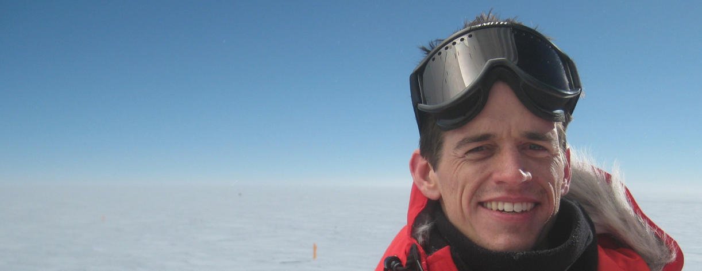

Ryan Keisler
I'm an astrophysicist at Stanford University and I
- analyze data from (and occasionally build) telescopes that...
- observe light from very distant regions of space in order to...
- learn about the age, make-up, and fate of the universe, which in turn...
- can tell us a lot about "neutrinos", "inflation", and other topics in physics.
My research focuses on the cosmic microwave background and large-scale, cosmological structure. I've pursued a lot of this research working on the South Pole Telescope project since 2005.
- Kavli Fellow, Stanford University, 2013-present
- NASA Hubble Fellow, University of Chicago, 2011-2013
- PhD Physics, University of Chicago, 2010
- Publications (arxiv, ads), cv
selected publications
other projects
[email me]
@RyanKeisler